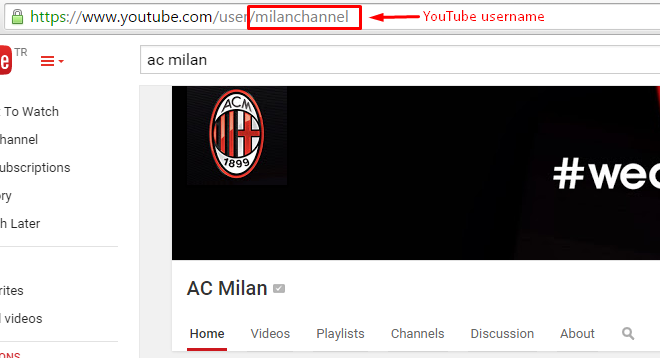

Help Documentation
Thank you for purchasing my template. If you have any questions that are beyond the scope of this help file, please feel free to email via my user page contact form here. Thanks so much!
Need a Customization?
Styles
Stylesheets
Here's a list of the stylesheet files I'm using with this template, you can find more information opening each file:
| File Name | Description |
|---|---|
style.css |
Contains all of the specific stylings for the template such as heights, widths, margins, paddings etc. |
colors.css |
Contains all color stylings |
normalize.css |
HTML5 display definitions |
animate.css |
Contains CSS3 animations |
media.css |
Contains some definitions for responsive design |
ytv.css |
Contains You Tube TV plugin stylings |
colorbox.css |
Colorbox plugin stylings |
flexslider.css |
Flexslider slider plugin stylings |
easy-responsive-tabs.css |
Responsive tabs plugin stylings |
grid.css |
Responsive grid framework |
magnific-popup.css |
Popup plugin stylings |
JavaScript
JavaScript Files
Here's a list of the javascript files I'm using with this template, you can find more information at plugin official web sites:
| Tag | Description |
|---|---|
jquery.js |
jQuery is a Javascript library that greatly reduces the amount of code that you must write. |
jquery.flexslider.js |
jQuery slider plugin. |
backstretch.min.js |
Jquery responsive background image plugin |
modernizr.js |
Modernizr is an open-source JavaScript library that helps you build the next generation of HTML5 and CSS3-powered websites. |
jflickrfeed.min.js |
Flickr feed plugin |
jquery.colorbox.min.js |
Jquery lightbox plugin |
easyresponsivetabs.js |
Responsive tabs plugin |
gallery.js |
Filterable gallery plugin |
jquery.bxslider.min.js |
Jquery content slider plugin |
ytv.js |
You Tube playlist plugin |
jquery.magnific-popup.min.js |
Jquery popup box plugin |
custom.js |
Contains custom scripts |
How To Change the Contact Forms Recipient E-mail
If you want to change the Recipient E-mail, open up the processForm.php file and change the following code:
define( "RECIPIENT_NAME", "YOUR NAME" ); define( "RECIPIENT_EMAIL", "YOUR MAIL" );
define( "RECIPIENT_NAME", "egemenerd" ); define( "RECIPIENT_EMAIL", "yourmail@mail.com" );
How To Change the Flickr ID
To change the Flickr id, open up the jflickrfeed.min.js file and change the following id with your id:
id: '52617155@N08'
How To use filterable gallery plugin
To add a filter menu to each gallery, you should use unique ids like the following example (You should also include gallery.js file to the page):

How To use YouTube TV
To use YouTube TV first of all you have to obtain an API Key from Google's Developer Console.
To obtain your API Key you can follow this guide using steps 1 to 3;
Getting Started with the YouTube Data API
Then:
4. under APIs & auth > Credentials > Create new Key > (Select) Browser Key
5. (Recommended) Set any referrers to your domain to prevent unauthorized use of your key.
6. (Optional) Additionally disabling any other unused APIs that are enabled.
After that open index2.html file and add your api key and yoıur YouTube username (or channelid) to the following code which is at the bottom of the page;
jQuery(document).ready(function() {
jQuery('#youtube-wrapper').ytv({
apiKey: 'YOUR-API-KEY',
user: 'milanchannel', // You Tube username
channelId: '', // You Tube channel id
browsePlaylists: true,
maxvideo: 10, // Max number of video
maxplaylist: 20, // Max video in the playlist
controls: true,
autoplay: false
});
});
You can play with other settings (Maximum number of video, maxnumber of playlist etc.).
Where can I find YouTube username?
Username is "milanchannel" on the following example;

Where can I find YouTube channel id?
Channel ID is "UCPDXXXJj9nax0fr0Wfc048g" on the following example;

Credits Files
I've used the following scripts and other files as listed.
JavaScript
- jQuery
- jQuery Backstretch
- Modernizr
- Flickr Feed
- Colorbox
- Flexslider
- Responsive Tabs
- Bxslider
- Magnific Popup
- You Tube TV
CSS
Font
Documentation File Template
Demo Images
Once again, thank you so much for purchasing this template. As I said at the beginning, I'd be glad to help you if you have any questions relating to this theme. No guarantees, but I'll do my best to assist. If you have a more general question relating to the themes on ThemeForest, you might consider visiting the forums and asking your question in the "Item Discussion" section.